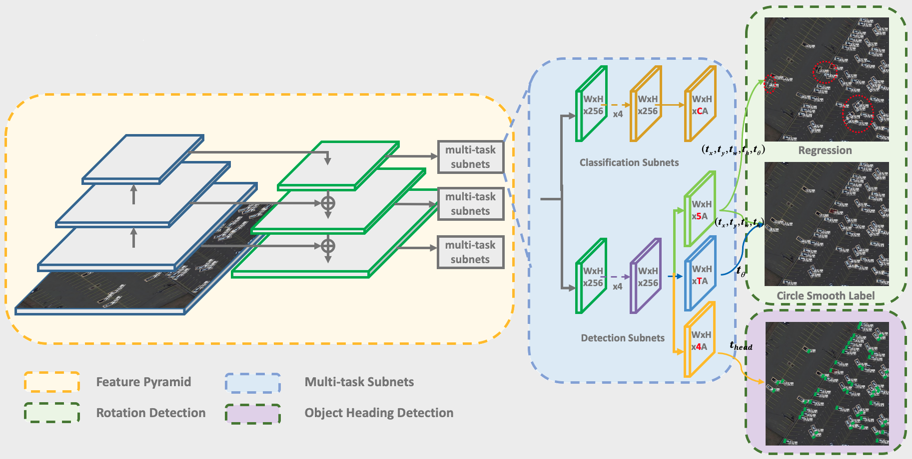

- Xue Yang, Shanghai Jiao Tong University, China
- Junchi Yan (corresponding author), Shanghai Jiao Tong University, China
- Tao He, COWAROBOT Co., Ltd, China
On the Arbitrary-Oriented Object Detection: Classification based Approaches Revisited
Abstract
Abstract
Arbitrary-oriented object detection has been a building block for rotation sensitive tasks. We first show that the problem of discontinuous boundaries suffered in existing dominant regression-based rotation detectors, is caused by angular periodicity or corner ordering, according to the parameterization protocol. We also show that the root cause is that the ideal predictions can be out of the defined range. Accordingly, we transform the angular prediction task from a regression problem to a classification one. For the resulting circularly distributed angle classification problem, we first devise a Circular Smooth Label (CSL) technique to handle the periodicity of angle and increase the error tolerance to adjacent angles. To reduce the excessive model parameters by CSL, we further design a Gray Coded Label (GCL), which greatly reduces the length of the encoding. Finally, we further develop an object heading detection module, which can be useful when the exact heading orientation information is needed e.g. for ship and plane heading detection. We release our OHD-SJTU dataset and OHDet detector for heading detection. Results on three large-scale public datasets for aerial images i.e. DOTA, HRSC2016, OHD-SJTU, as well as scene text dataset ICDAR2015 and MLT, show the effectiveness of our approach.
Authors
Paper & Code & Dataset
- ECCV Paper (CSL): [ecva][arxiv]
- PAMI Submission Paper: [homepage]
- CSL Code: [CSL-RetinaNet]
- GCL Code: [GCL-RetinaNet]
- OHDet Code: [OHDet]
- Dataset: [OHD-SJTU]
Approach
OHDet can be applied to rotation detection and object heading detection. Its structure combines many of my previous research contents, including R3Det, IoU-Smooth L1 Loss, CSL, etc. The figure below is the architecture of the proposed detector (RetinaNet as an embodiment).

Performance
Performance on OBB task of DOTA dataset:
| Method | Backbone | PL | BD | BR | GTF | SV | LV | SH | TC | BC | ST | SBF | RA | HA | SP | HC | mAP |
|---|---|---|---|---|---|---|---|---|---|---|---|---|---|---|---|---|---|
| FR-O | ResNet101 | 79.09 | 69.12 | 17.17 | 63.49 | 34.20 | 37.16 | 36.20 | 89.19 | 69.60 | 58.96 | 49.4 | 52.52 | 46.69 | 44.80 | 46.30 | 52.93 |
| IENet | ResNet101 | 80.20 | 64.54 | 39.82 | 32.07 | 49.71 | 65.01 | 52.58 | 81.45 | 44.66 | 78.51 | 46.54 | 56.73 | 64.40 | 64.24 | 36.75 | 57.14 |
| R-DFPN | ResNet101 | 80.92 | 65.82 | 33.77 | 58.94 | 55.77 | 50.94 | 54.78 | 90.33 | 66.34 | 68.66 | 48.73 | 51.76 | 55.10 | 51.32 | 35.88 | 57.94 |
| TOSO | ResNet101 | 80.17 | 65.59 | 39.82 | 39.95 | 49.71 | 65.01 | 53.58 | 81.45 | 44.66 | 78.51 | 48.85 | 56.73 | 64.40 | 64.24 | 36.75 | 57.92 |
| PIoU | DLA-34 | 80.9 | 69.7 | 24.1 | 60.2 | 38.3 | 64.4 | 64.8 | 90.9 | 77.2 | 70.4 | 46.5 | 37.1 | 57.1 | 61.9 | 64.0 | 60.5 |
| R2CNN | ResNet101 | 80.94 | 65.67 | 35.34 | 67.44 | 59.92 | 50.91 | 55.81 | 90.67 | 66.92 | 72.39 | 55.06 | 52.23 | 55.14 | 53.35 | 48.22 | 60.67 |
| RRPN | ResNet101 | 88.52 | 71.20 | 31.66 | 59.30 | 51.85 | 56.19 | 57.25 | 90.81 | 72.84 | 67.38 | 56.69 | 52.84 | 53.08 | 51.94 | 53.58 | 61.01 |
| Axis Learning | ResNet101 | 79.53 | 77.15 | 38.59 | 61.15 | 67.53 | 70.49 | 76.30 | 89.66 | 79.07 | 83.53 | 47.27 | 61.01 | 56.28 | 66.06 | 36.05 | 65.98 |
| ICN | ResNet101 | 81.40 | 74.30 | 47.70 | 70.30 | 64.90 | 67.80 | 70.00 | 90.80 | 79.10 | 78.20 | 53.60 | 62.90 | 67.00 | 64.20 | 50.20 | 68.20 |
| RADet | ResNeXt101 | 79.45 | 76.99 | 48.05 | 65.83 | 65.46 | 74.40 | 68.86 | 89.70 | 78.14 | 74.97 | 49.92 | 64.63 | 66.14 | 71.58 | 62.16 | 69.09 |
| RoI-Transformer | ResNet101 | 88.64 | 78.52 | 43.44 | 75.92 | 68.81 | 73.68 | 83.59 | 90.74 | 77.27 | 81.46 | 58.39 | 53.54 | 62.83 | 58.93 | 47.67 | 69.56 |
| P-RSDet | ResNet101 | 89.02 | 73.65 | 47.33 | 72.03 | 70.58 | 73.71 | 72.76 | 90.82 | 80.12 | 81.32 | 59.45 | 57.87 | 60.79 | 65.21 | 52.59 | 69.82 |
| CAD-Net | ResNet101 | 87.8 | 82.4 | 49.4 | 73.5 | 71.1 | 63.5 | 76.7 | 90.9 | 79.2 | 73.3 | 48.4 | 60.9 | 62.0 | 67.0 | 62.2 | 69.9 |
| O2-DNet | Hourglass104 | 89.31 | 82.14 | 47.33 | 61.21 | 71.32 | 74.03 | 78.62 | 90.76 | 82.23 | 81.36 | 60.93 | 60.17 | 58.21 | 66.98 | 61.03 | 71.04 |
| AOOD | ResNet101 | 89.99 | 81.25 | 44.50 | 73.20 | 68.90 | 60.33 | 66.86 | 90.89 | 80.99 | 86.23 | 64.98 | 63.88 | 65.24 | 68.36 | 62.13 | 71.18 |
| Cascade-FF | ResNet152 | 89.9 | 80.4 | 51.7 | 77.4 | 68.2 | 75.2 | 75.6 | 90.8 | 78.8 | 84.4 | 62.3 | 64.6 | 57.7 | 69.4 | 50.1 | 71.8 |
| BBAVectors | ResNet101 | 88.35 | 79.96 | 50.69 | 62.18 | 78.43 | 78.98 | 87.94 | 90.85 | 83.58 | 84.35 | 54.13 | 60.24 | 65.22 | 64.28 | 55.70 | 72.32 |
| SCRDet | ResNet101 | 89.98 | 80.65 | 52.09 | 68.36 | 68.36 | 60.32 | 72.41 | 90.85 | 87.94 | 86.86 | 65.02 | 66.68 | 66.25 | 68.24 | 65.21 | 72.61 |
| SARD | ResNet101 | 89.93 | 84.11 | 54.19 | 72.04 | 68.41 | 61.18 | 66.00 | 90.82 | 87.79 | 86.59 | 65.65 | 64.04 | 66.68 | 68.84 | 68.03 | 72.95 |
| GLS-Net | ResNet101 | 88.65 | 77.40 | 51.20 | 71.03 | 73.30 | 72.16 | 84.68 | 90.87 | 80.43 | 85.38 | 58.33 | 62.27 | 67.58 | 70.69 | 60.42 | 72.96 |
| DRN | Hourglass104 | 89.71 | 82.34 | 47.22 | 64.10 | 76.22 | 74.43 | 85.84 | 90.57 | 86.18 | 84.89 | 57.65 | 61.93 | 69.30 | 69.63 | 58.48 | 73.23 |
| FADet | ResNet101 | 90.21 | 79.58 | 45.49 | 76.41 | 73.18 | 68.27 | 79.56 | 90.83 | 83.40 | 84.68 | 53.40 | 65.42 | 74.17 | 69.69 | 64.86 | 73.28 |
| MFIAR-Net | ResNet152 | 89.62 | 84.03 | 52.41 | 70.30 | 70.13 | 67.64 | 77.81 | 90.85 | 85.40 | 86.22 | 63.21 | 64.14 | 68.31 | 70.21 | 62.11 | 73.49 |
| R3Det | ResNet152 | 89.24 | 80.81 | 51.11 | 65.62 | 70.67 | 76.03 | 78.32 | 90.83 | 84.89 | 84.42 | 65.10 | 57.18 | 68.10 | 68.98 | 60.88 | 72.81 |
| RSDet | ResNet152 | 90.1 | 82.0 | 53.8 | 68.5 | 70.2 | 78.7 | 73.6 | 91.2 | 87.1 | 84.7 | 64.3 | 68.2 | 66.1 | 69.3 | 63.7 | 74.1 |
| Gliding Vertex | ResNet101 | 89.64 | 85.00 | 52.26 | 77.34 | 73.01 | 73.14 | 86.82 | 90.74 | 79.02 | 86.81 | 59.55 | 70.91 | 72.94 | 70.86 | 57.32 | 75.02 |
| Mask OBB | ResNeXt101 | 89.56 | 85.95 | 54.21 | 72.90 | 76.52 | 74.16 | 85.63 | 89.85 | 83.81 | 86.48 | 54.89 | 69.64 | 73.94 | 69.06 | 63.32 | 75.33 |
| FFA | ResNet101 | 90.1 | 82.7 | 54.2 | 75.2 | 71.0 | 79.9 | 83.5 | 90.7 | 83.9 | 84.6 | 61.2 | 68.0 | 70.7 | 76.0 | 63.7 | 75.7 |
| APE | ResNeXt-101 | 89.96 | 83.62 | 53.42 | 76.03 | 74.01 | 77.16 | 79.45 | 90.83 | 87.15 | 84.51 | 67.72 | 60.33 | 74.61 | 71.84 | 65.55 | 75.75 |
| CenterMap OBB | ResNet101 | 89.83 | 84.41 | 54.60 | 70.25 | 77.66 | 78.32 | 87.19 | 90.66 | 84.89 | 85.27 | 56.46 | 69.23 | 74.13 | 71.56 | 66.06 | 76.03 |
| CSL | ResNet152 | 90.25 | 85.53 | 54.64 | 75.31 | 70.44 | 73.51 | 77.62 | 90.84 | 86.15 | 86.69 | 69.60 | 68.04 | 73.83 | 71.10 | 68.93 | 76.17 |
| GCL | ResNet152 | 89.70 | 83.34 | 55.44 | 67.31 | 78.98 | 74.78 | 85.86 | 90.82 | 85.56 | 85.33 | 65.56 | 61.52 | 72.30 | 78.11 | 68.91 | 76.23 |
We divide the training and validation images into 600x600 subimages with an overlap of 150 pixels and scale it to 800x800. In the process of cropping the image with the sliding window, keeping those objects whose center point is in the subimage. All experiments are based on the same setting, using ResNet101 as the backbone. Except for data augmentation (include random horizontal, vertical flipping, random graying, and random rotation) is used in OHD-SJTU-S, no other tricks are used.
Performance on OBB task of OHD-SJTU-L:
| Method | PL | SH | SV | LV | HA | HC | AP50 | AP75 | AP50:95 |
|---|---|---|---|---|---|---|---|---|---|
| R2CNN | 89.99 | 71.93 | 54.00 | 65.46 | 66.36 | 55.94 | 67.28 | 32.69 | 34.78 |
| RRPN | 89.66 | 75.35 | 50.25 | 72.22 | 62.99 | 45.26 | 65.96 | 21.24 | 30.13 |
| RetinaNet-H | 90.20 | 66.99 | 53.58 | 63.38 | 63.75 | 53.82 | 65.29 | 34.59 | 35.39 |
| RetinaNet-R | 89.99 | 77.65 | 51.77 | 81.22 | 62.85 | 52.25 | 69.29 | 39.07 | 38.90 |
| R3Det | 89.89 | 78.36 | 55.23 | 78.35 | 57.06 | 53.50 | 68.73 | 35.36 | 37.10 |
| OHDet | 89.72 | 77.40 | 52.89 | 78.72 | 63.76 | 54.62 | 69.52 | 41.89 | 39.51 |
Performance on OBB task of OHD-SJTU-S:
| Method | PL | SH | AP50 | AP75 | AP50:95 |
|---|---|---|---|---|---|
| R2CNN | 90.91 | 77.66 | 84.28 | 55.00 | 52.80 |
| RRPN | 90.14 | 76.13 | 83.13 | 27.87 | 40.74 |
| RetinaNet-H | 90.86 | 66.32 | 78.59 | 58.45 | 53.07 |
| RetinaNet-R | 90.82 | 88.14 | 89.48 | 74.62 | 61.86 |
| R3Det | 90.82 | 85.59 | 88.21 | 67.13 | 56.19 |
| OHDet | 90.74 | 87.59 | 89.06 | 78.55 | 63.94 |
The performance of object heading detection on OHD-SJTU-L:
| Task | PL | SH | SV | LV | HA | HC | IoU50 | IoU75 | IoU50:95 |
|---|---|---|---|---|---|---|---|---|---|
| OBB mAP | 89.63 | 75.88 | 46.21 | 75.88 | 61.43 | 33.87 | 63.88 | 37.45 | 36.42 |
| OHD mAP | 59.88 | 41.90 | 26.21 | 35.34 | 41.24 | 17.53 | 37.02 | 24.10 | 22.46 |
| Head Accuracy | 74.49 | 69.71 | 62.21 | 57.95 | 76.66 | 49.06 | 65.01 | 65.77 | 64.60 |
The performance of object heading detection on OHD-SJTU-S:
| Task | PL | SH | IoU50 | IoU75 | IoU50:95 |
|---|---|---|---|---|---|
| OBB mAP | 90.73 | 88.59 | 89.66 | 75.62 | 61.49 |
| OHD mAP | 76.89 | 86.40 | 81.65 | 65.51 | 55.09 |
| Head Accuracy | 90.91 | 94.87 | 92.89 | 93.81 | 94.25 |
Visualization